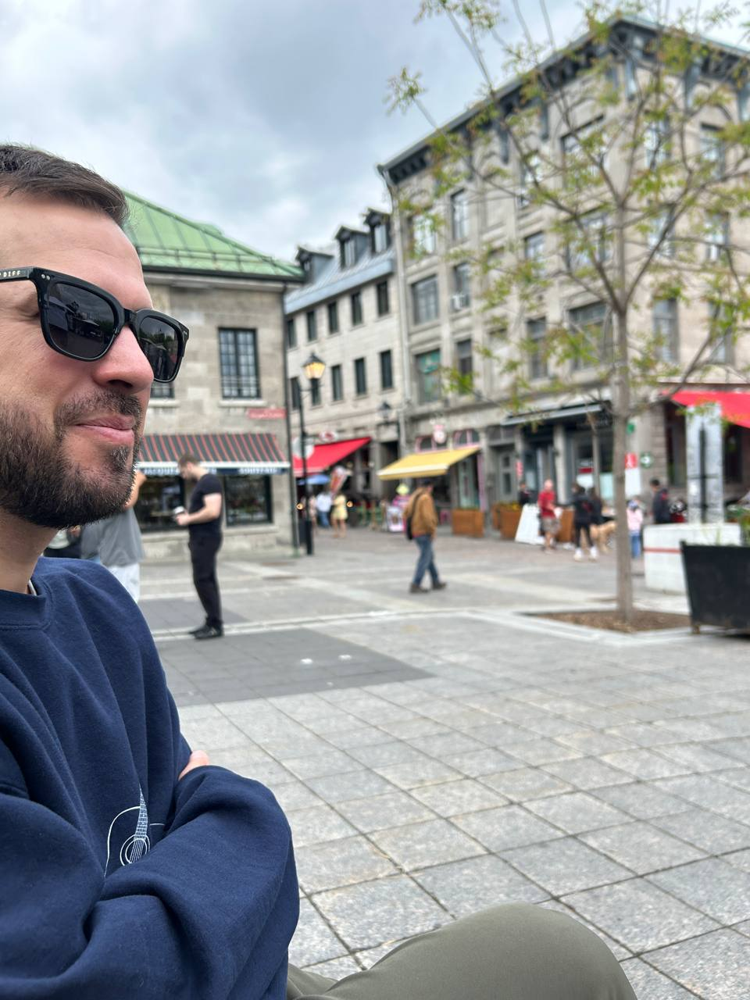

Some connections cross light-years. Others cross time. The rarest ones cross both.
Theo woke to the taste of copper and the knowledge that he was not where he had been.
Not groggy. Not slow. The opposite. Every nerve firing at once, the way the body responds to a car wreck before the mind catches up.
He opened his eyes and the sky was wrong.

Lucas Reed writes from Highland, California. Read Chapter 1 → About → Explore the world →